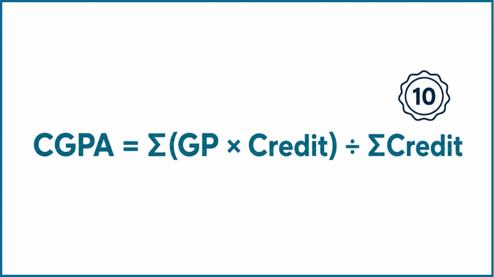

10 Point CGPA Calculator – Calculate Your CGPA Online Instantly
CGPA Calculator
Target CGPA
SGPA → CGPA
How This 10 Point CGPA Calculator Helps You
Our 10 Point CGPA Calculator helps you calculate your CGPA quickly and accurately. Just enter your semester grades, grade points, or SGPA, and the calculator will show your overall CGPA in seconds. It is simple to use and works for students who follow a 10 point grading system.
This calculator is useful for students from engineering colleges, universities, and other higher education institutes that use a 10 point CGPA scale. Many students from IITs, NITs, IIITs, VIT, SRM, Manipal, AKTU, Anna University, and other universities use a similar grading system to measure academic performance. If your university follows a 10 point scale, this tool can help you calculate your CGPA with ease. Since grading policies can vary, you should always check your university's official guidelines if you are unsure.
You can use this calculator to find your semester CGPA, calculate your cumulative CGPA, or estimate your final CGPA based on your grades and credit hours. It's a fast, convenient way to check your results without manual calculations, useful for internship applications, campus placements, scholarships, or higher studies.
10 Point CGPA Calculator
A 10 Point CGPA Calculator is an online tool that helps students calculate their Cumulative Grade Point Average using a 10 point grading system. It combines your semester grades, grade points, and credit hours to show your overall CGPA in a few seconds. This calculator is useful for students studying in engineering colleges, universities, and institutes that follow a 10 point scale. It reduces manual calculation errors and saves time. You can use it to track your academic performance, estimate your final CGPA, and better understand how your grades affect your overall score.
How to Calculate CGPA on a 10 Point Scale

Calculating your CGPA on a 10 point scale is simple when you know your grade points and credit hours. Most engineering colleges and universities use a credit based grading system. Each subject has a credit value, and your grade point is multiplied by the credit for that subject. After adding all the weighted grade points, divide the total by the total number of credits. The final result is your CGPA.
Formula
Use this formula to calculate your CGPA:
This method gives more importance to subjects with higher credit hours. It is one of the most common ways to calculate CGPA in universities that follow a 10 point grading system.
Example (Equal Credits)
Suppose you completed five subjects with the following grade points:
| Subject | Grade Point |
|---|---|
| Subject 1 | 9 |
| Subject 2 | 8 |
| Subject 3 | 10 |
| Subject 4 | 7 |
| Subject 5 | 8 |
If all subjects have the same credit value, simply add the grade points and divide by the number of subjects.
Credit Based Example
Most universities assign different credit hours to each subject. In this case, you must include both the grade point and the credit value.
| Subject | Credit | Grade Point | Credit × Grade Point |
|---|---|---|---|
| Mathematics | 4 | 9 | 36 |
| Physics | 3 | 8 | 24 |
| Programming | 4 | 10 | 40 |
| English | 2 | 8 | 16 |
| Electronics | 3 | 7 | 21 |
Total Credits = 16 | Total Grade Points = 137
If you do not want to calculate everything manually, use the 10 Point CGPA Calculator above. Enter your grades, credits, or SGPA, and the calculator will instantly calculate your overall CGPA.
Who Can Use This 10 Point CGPA Calculator?
This calculator is designed for students who study under a 10 point grading system. If your college or university calculates grades using grade points, credits, SGPA, and CGPA, you can use this tool to estimate your academic performance in a few simple steps.
It is helpful for students from engineering colleges, technical institutes, and universities that follow a 10 point CGPA scale. This includes students from IITs, NITs, IIITs, AKTU, JNTU, VTU, Anna University, VIT, SRM University, Manipal University, KIIT, BPUT, LPU, Chandigarh University, and many other institutions that use a similar credit based grading system.
The calculator is also useful for undergraduate and postgraduate students studying B.Tech, BE, BSc, BCA, MCA, M.Tech, MBA, MSc, and other degree programs where CGPA is calculated from semester grades and credit hours. Polytechnic students and diploma students can also use this tool if their institute follows a compatible 10 point grading method.
Simply enter your SGPA, grade points, or semester credits to calculate your overall CGPA. If your university uses a different grading policy or a custom conversion formula, compare your result with your official academic regulations before using it for admissions, job applications, scholarships, or other official purposes.
Universities That Commonly Use a 10 Point CGPA System
Many engineering colleges and universities use a 10 point CGPA grading system to measure student performance. If your institution follows the standard 10 point grading scale, you can use this calculator to estimate your CGPA quickly and accurately.
| University or Institute | Uses a 10 Point CGPA Scale | Suitable for This Calculator |
|---|---|---|
| IIT (Indian Institutes of Technology) | Yes | Yes* |
| NIT (National Institutes of Technology) | Yes | Yes* |
| IIIT (Indian Institutes of Information Technology) | Yes | Yes* |
| VIT (Vellore Institute of Technology) | Yes | Yes* |
| SRM Institute of Science and Technology | Yes | Yes* |
| Manipal Academy of Higher Education | Yes | Yes* |
| Dr. A.P.J. Abdul Kalam Technical University (AKTU) | Yes | Yes* |
| Anna University | Yes | Yes* |
| KIIT University | Yes | Yes* |
| Lovely Professional University (LPU) | Yes | Yes* |
| Chandigarh University | Yes | Yes* |
| Biju Patnaik University of Technology (BPUT) | Yes | Yes* |
| Visvesvaraya Technological University (VTU) | Yes | Yes* |
| Amity University | Yes | Yes* |
* This calculator is designed for the standard 10 point CGPA grading system. Some universities may use different credit structures, grading policies, or CGPA to percentage conversion formulas. Always check your university's official academic regulations before using the result for transcripts, admissions, scholarships, or placement purposes.
CGPA vs GPA vs SGPA
Many students get confused between CGPA, GPA, and SGPA because they all measure academic performance. The main difference is when and how they are calculated. Knowing these terms helps you understand your grades, compare your results, and use the right calculator.
| Feature | CGPA | GPA | SGPA |
|---|---|---|---|
| Full Form | Cumulative Grade Point Average | Grade Point Average | Semester Grade Point Average |
| Measures | Overall academic performance | Performance for a course, term, or academic period | Performance in a single semester |
| Based On | All completed semesters | One academic period or grading system | One semester only |
| Includes Credits | Yes | Yes | Yes |
| Used For | Final academic record, placements, scholarships, and higher studies | Academic evaluation and international education systems | Tracking semester performance |
| Changes After Every Semester | Yes | Depends on the institution | Yes |
Frequently Asked Questions
A 10 Point CGPA is a grading system where your academic performance is measured on a scale from 0 to 10. Your CGPA is calculated by combining the grade points you earn across all semesters. Many engineering colleges and universities use this system to evaluate student performance. A higher CGPA usually shows better academic results.
Most IIT students calculate their CGPA using the grade points earned in each course and the credit hours assigned to those courses. Each semester's performance is based on a credit-weighted calculation. The final CGPA is the cumulative average of all completed semesters. Since grading policies may differ between IITs, students should always follow their institute's official academic regulations.
Yes. SGPA (Semester Grade Point Average) shows your performance in one semester only. CGPA (Cumulative Grade Point Average) combines the results from all completed semesters. If you want to know your overall academic performance, you should use your CGPA instead of your SGPA.
Your CGPA includes all completed semesters in your academic program. For example, if you have finished four semesters, your CGPA is calculated using the grades and credits from those four semesters. As you complete more semesters, your CGPA is updated to reflect your overall academic performance.
Yes. Most universities that use a 10-point grading system calculate CGPA using course credits and grade points. Each course carries a certain number of credit hours, and courses with higher credits have a greater impact on your final CGPA. Using credits helps provide a more accurate result.
Yes, this calculator uses the standard 10-point CGPA calculation method. If you enter the correct grade points, credits, or semester details, it will provide an accurate result based on the information you enter. Some universities may use different grading rules or percentage conversion formulas, so it is always a good idea to compare your result with your university's official guidelines.
No. Many universities follow a similar 10-point grading system, but the calculation method can vary. Some universities use credit-based calculations, while others may have different grading policies or percentage conversion rules. Always check your university's official academic handbook if you are unsure about the formula.
The conversion depends on your university's official formula. Many universities use a fixed conversion formula, while others have their own method. Enter your CGPA into the calculator and apply your university's approved conversion rule to estimate your percentage. Always verify the final percentage using your institution's official guidelines.
To calculate your overall CGPA, combine the grade points and credit hours from all completed semesters. Add the total weighted grade points, then divide the result by the total credit hours earned. This gives you your cumulative grade point average, which reflects your overall academic performance throughout your degree.
Yes. This calculator is suitable for engineering students who study under a 10-point grading system. It can be used for semester-wise and overall CGPA calculations. It is helpful for students from many engineering colleges and universities that follow a credit-based grading system. If your university uses a different grading method, compare your result with the official academic policy.
CGPA Guides & Resources
What Is CGPA?
Understand what CGPA means, how it differs from GPA, and why universities worldwide use it to measure academic performance.
Read guide → →History of the CGPA Formula
Follow the formula from Yale's 1785 grades to Bangladesh's UGC scale: the story behind the math.
Read guide → →What Is a Good CGPA?
Find out what your CGPA means for jobs, graduate school, and scholarships, with realistic benchmarks by field.
Read guide →